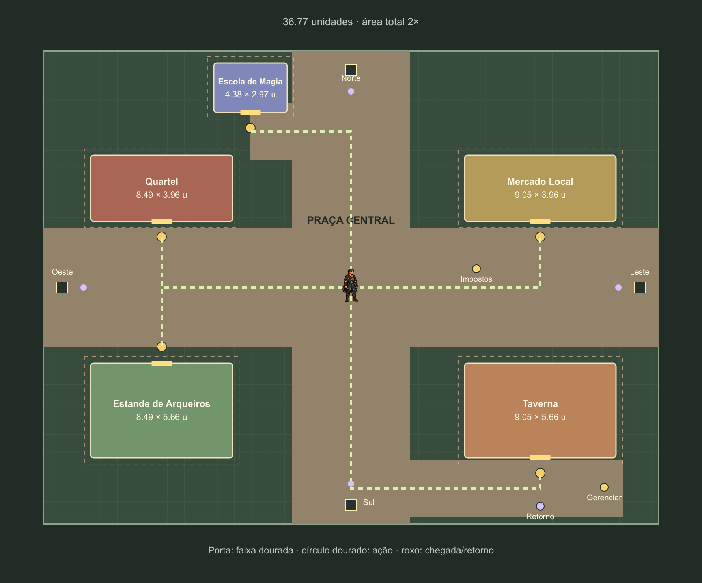

Centro — protótipo jogável de circulação
Escala revisada: área do mapa e das construções duplicada. Ver antes/depois e medidas da revisão V2.
Etapa 2: formas provisórias para testar espaço, câmera, colisões e entrada/saída da Taverna. A cena Centro original e a Taverna original foram preservadas. O protótipo usa uma sessão temporária, sem salvar alterações na sua partida.
Validação funcional: 1/1 passou. Percurso pelos serviços e quatro saídas, colisão, construção da Taverna, entrada/saída e preservação do save. Sete capturas estão disponíveis para revisão da composição; ainda são imagens candidatas.
Como testar no Unity
- Abra Assets → Scenes → Prototypes → CentroLayoutPrototype.
- Entre no modo de jogo. Use WASD ou setas para andar e E para interagir.
- Percorra os cinco edifícios, o coletor e os quatro sentinelas. As saídas são marcadores de percurso nesta cópia.
- Na rua inferior, aproxime-se da porta da Taverna para entrar. A placa lateral gerencia o edifício.
- Na cópia do interior, use E na saída para voltar diante da fachada. Ao encerrar o modo de jogo, os dados temporários são descartados.
O início do protótipo oferece 5.000 de ouro temporário e edifícios no nível 1 para facilitar a avaliação. A Taverna não construída também faz parte da verificação automatizada.
Visão geral de revisão
O enquadramento abaixo mostra a planta inteira para comparação. Durante o jogo, a câmera usa o enquadramento mais próximo mostrado na seção seguinte.
 Ruas de aproximadamente 7,07 u e 3,39 u, cinco lotes ampliados e acesso inferior à Taverna. As cores identificam ocupação física; a arte externa final vem depois.
Ruas de aproximadamente 7,07 u e 3,39 u, cinco lotes ampliados e acesso inferior à Taverna. As cores identificam ocupação física; a arte externa final vem depois.
Comparar com a planta atualizada

Planta V2 com o dobro de área.Geometria aplicada na cópia jogável.Câmera próxima do jogador
 Capturas com posições controladas para revisão; o teste funcional percorre a cena com movimento e colisão reais.
Capturas com posições controladas para revisão; o teste funcional percorre a cena com movimento e colisão reais.
Entrada, gestão e retorno separados
O interior é uma cópia da Taverna existente com o mesmo personagem do Centro. Recrutamento e exploração ficam desativados nessa cópia para concentrar a avaliação no acesso e retorno. A posição de retorno foi refinada para acomodar o corpo real do jogador e manter folga da borda e da zona de entrada.
 Interior copiado; esta etapa não propõe uma nova arte interna.
Interior copiado; esta etapa não propõe uma nova arte interna. Saída por interação, retornando diante da fachada.
Saída por interação, retornando diante da fachada.A próxima etapa é a arte piloto da fachada da Taverna, usando as proporções desta cópia jogável e o jogador como referência.